恩人來了
除了夜裡其他房間的門被開開關關的好幾次之外，住在這間旅館還挺平安的。
要是花錢住旅館反而還羊入虎口的話，那我真的不知道該說什麼好。
早餐就在雜貨店買了一大瓶的柳丁汁，可以補充維他命C，配著巨無霸麵包和冰淇淋。
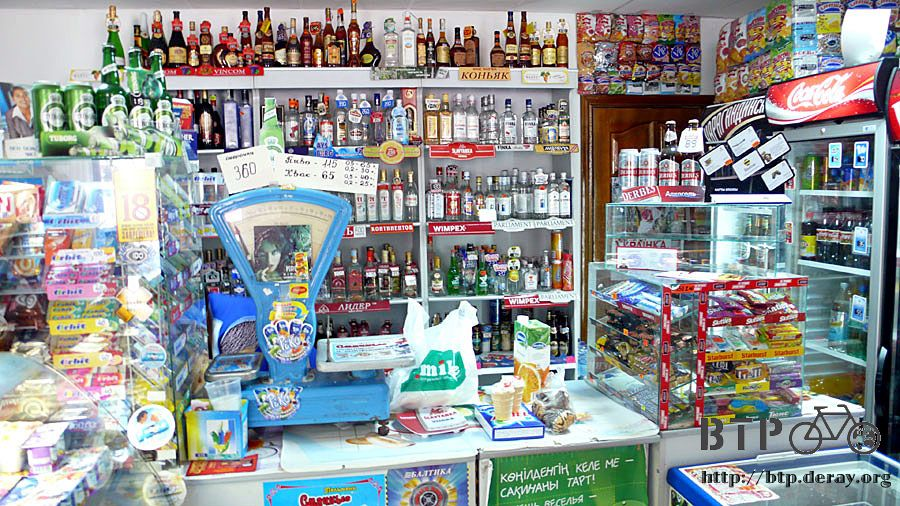
昨天問到自行車店營業的時間從早上十點開始，邊啃麵包邊牽著小多過去報到。
今天仔細的看了店裡面，發現真是我的媽媽咪呀～
裡面賣很多的尿布、嬰兒食品、搖籃、玩具車、嬰兒床、保健食品，腳踏車只佔了其中非常小的一部分。
而且，這一間店是全科斯塔奈唯一的一間自行車店，若這裡不能幫上忙的話，那再沒別得選擇了。
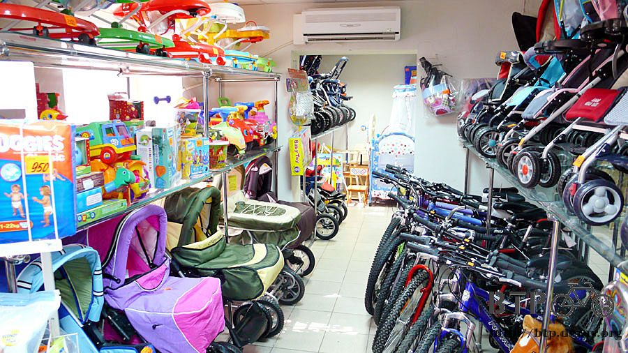
在對的時間來，就會遇到對的人出手相助，雖然是一間很奇怪的自行車店，但是還真有懂自行車維修的人。
昨天的女店員今天早上依然在顧店，看到我準時出現，她叫出了另一個高手來幫忙，亞歷山大。
在店門口卸下包包之後再次反轉小多，讓高手檢查小多的傷勢，鋼絲斷裂、輪框變形，請問大師該如何醫治？
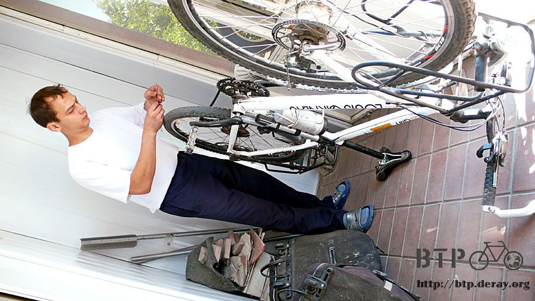
聽從亞歷山大的指示，將後輪拆卸下來，讓他拿到店裡面的維修區處理。
要買新的是沒辦法，只能將斷掉的鋼絲換新的回去，而已經變形的輪框則無法處理，撐著騎到莫斯科再來想辦法。
斷掉的四根鋼絲有三根的位置是在齒輪的地方，店裡沒有工具可以拆齒輪，所以不能更換。
只換了一根位於碟煞那一邊的鋼絲，恰巧這一根鋼絲正好是位於氣嘴連續斷兩根的其中一根，這樣那裡看起來就不會空虛得令人害怕。
在動工的其間，女店員很貼心的泡了一杯熱紅茶，還切了一片萊姆放在裡頭請我喝。
鋼絲換完之後，亞歷山大接著拿出小工具來調整鋼絲的鬆緊度，將整個輪胎都調整過，重新裝回車架上之後，偏移的問題已經改善很多。
我自己有帶一個萬用的工具，裡面就是什麼螺絲起子、六角起子想得到的工具都有，雖然一應俱全，但是很難用。
看到亞歷山大調鋼絲的小工具超方便的，順便問他有沒有多的，能不能賣我一個？
亞歷山大翻著抽屜，給了我一個黑色的。
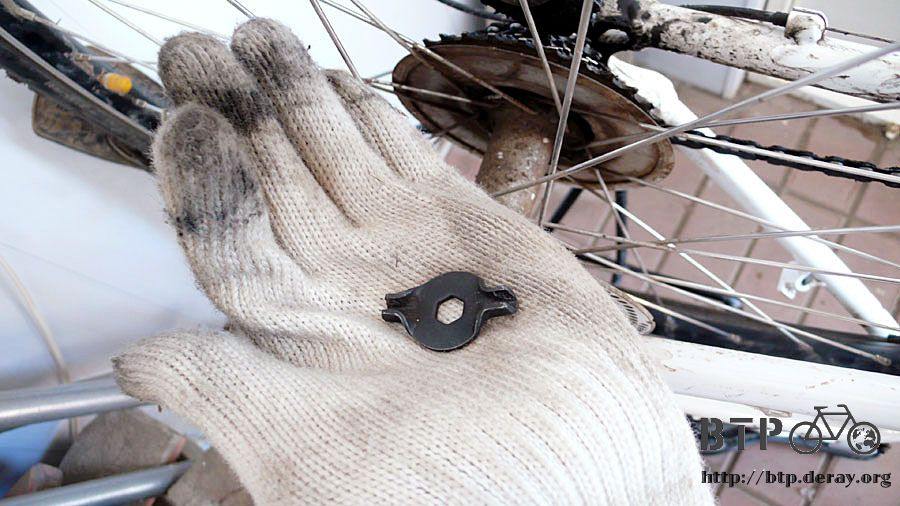
雖然只換了一根鋼絲，但是進車店讓高手處理過之後，感覺小多好像已經康復了一大半，心情非常喜悅。
維修前都沒有問多少錢，因為價錢不是問題，只要能夠處理好，再貴我都捨得花下去。
換完鋼絲之後，我掏著腰包裡的錢準備付帳，不小心掉了一個二十元的硬幣在地上，亞歷山大把硬幣撿起來，說這樣就夠了。
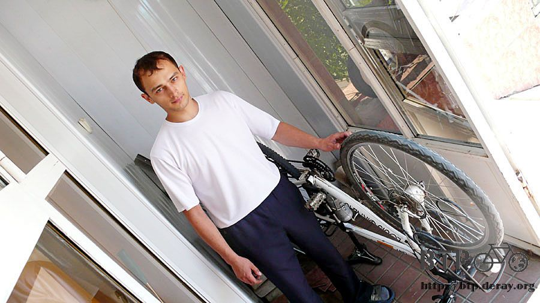
換了一根鋼絲只跟我收二十元，這連材料費都不夠吧？甚至連泡給我喝的那一杯紅茶都不止這個價錢。
而且還大方的送了一個小工具，讓我可以方便的一路維護鋼絲的情況。
就算收一千元甚至更貴我也覺得理所當然，但是只撿起地上的一枚硬幣，說這樣就夠了。
這份恩情是金錢無法支付的，亞歷山大我感激你。
只花了半個小時就處理好小多的狀況，並不需要拖上一整天，那麼就可以離開這個城市，往國境移動了。
我問了往國境的路，他們拿出地圖，等等只要在某個馬路左轉，就可以接上聯外的道路，為了怕記不清楚，拍張照起來比較保險。
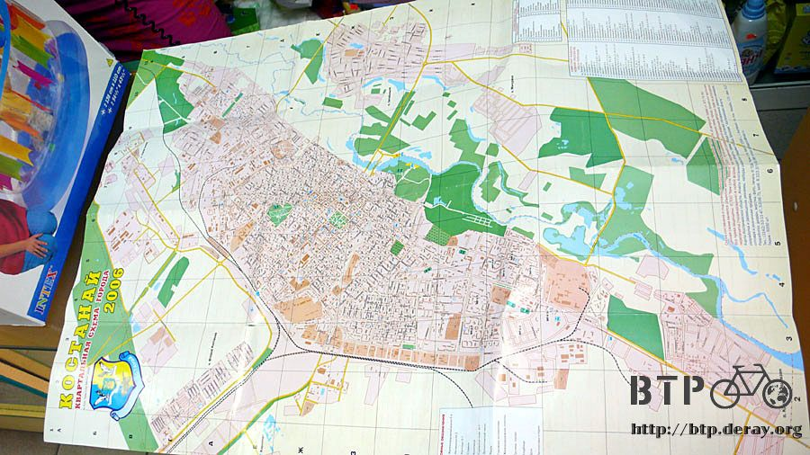
雖然這間店不像是一般的自行車店，可是真的幫了大忙，無比的感謝，離開的時候在店門口鞠了三次躬，重新上路。
要走之前又去了不方便的龜速網咖報到，兩個小時之後離開，再度被敲了八百元。
小多維修算告一段落了，其它部分也沒辦法處理，對於網路也沒有眷戀，離開城市吧～
在市區看見十字架的建築物，在哈薩克教堂還真是罕見，這一棟有點像，可是圓頂型的建築又不太像教堂風格。
雖然現在還是習慣騎慢一點比較安心，但是已經沒有什麼能阻擋我啦～無視STOP標誌通過。
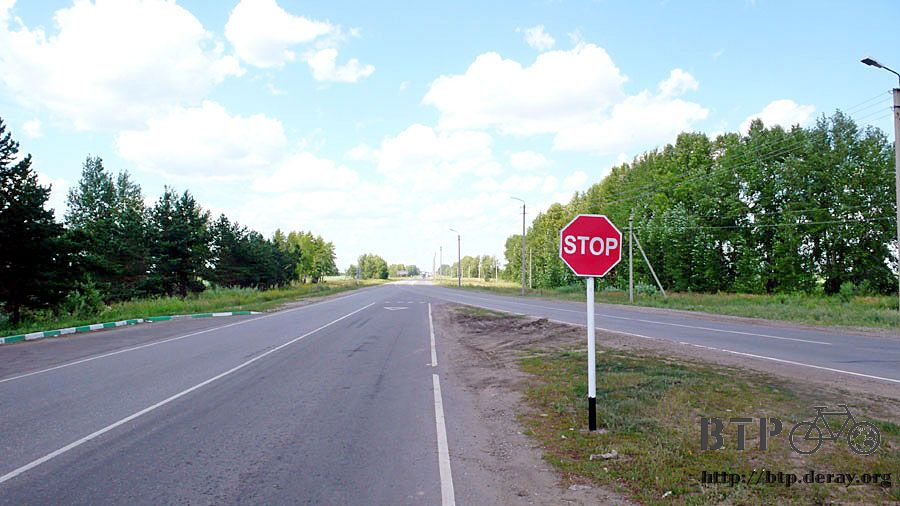
雖然找到聯外的道路，但道路指示牌寫的不是我要去的邊境城市，哈薩克和俄羅斯交界很長，關卡也很多，我不想跑錯地方通關。
先在路邊停下來找人問路，看到賣西瓜的人突然覺得好親切，在中國常看到這樣的流動小販。
只是哈薩克的西瓜小販都將瓜果放在大太陽下曝曬，不怕會曬壞嗎？
我指著前方的道路，說出要去的城市名稱，世界各地通用的肢體語言，而老闆則肯定的點頭說沒錯。
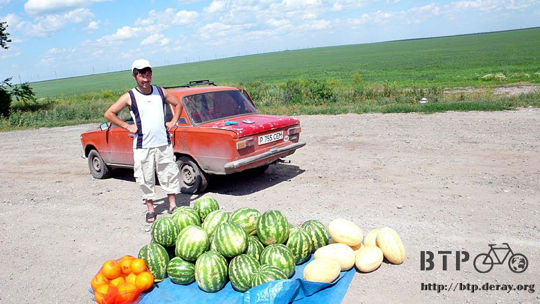
早餐吃完之後，除了一包餅乾和洗衣粉之外，就沒別的東西能吃了。
昨天睡的旅館超貴，讓我沒心情吃晚餐，就將包包裡的餅乾、蛋糕、巧克力，這些零食配開水當晚餐果腹。
要離開城市進入郊區之前，還是補給一下比較令人安心，買了一些飲料和零食。
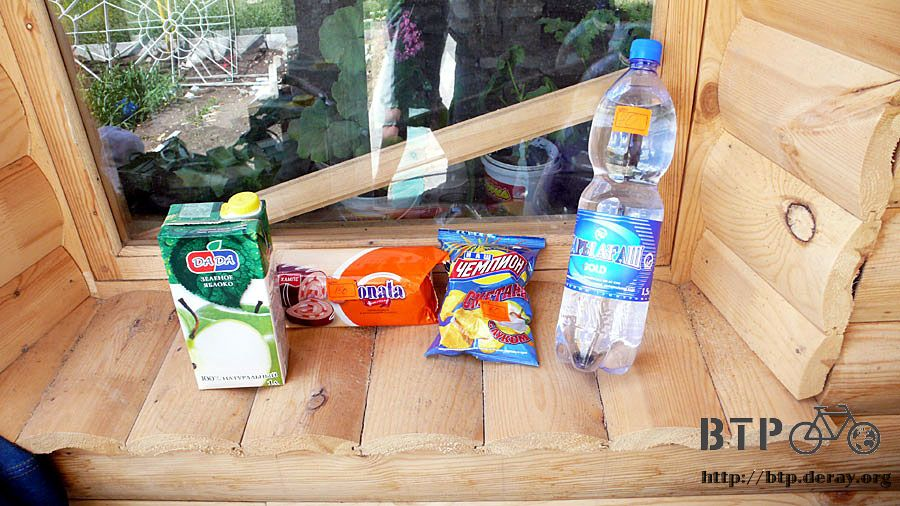
出發的時候已經是下午兩點，今天也不打算騎多遠，反正國境就在前方，而簽證生效還要等四天。
隨意的向前騎，有適合的地方就落腳，如果落腳處是旅館、價錢又便宜的話，管它是郊區還是荒野，多住一晚當休息日。
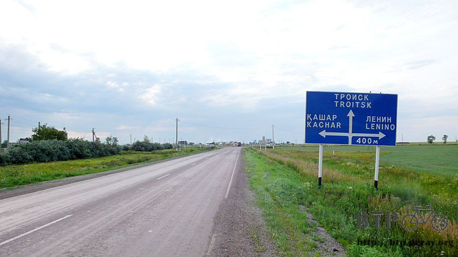
六個小時之後進入城市，不太大也不太小，感覺會有旅館的存在，果然沒多久就發現一間複合式經營的。
住宿的價錢貼上餐廳的牆面上，一晚上只要六百元，我跟老闆娘說要住兩個晚上，計算機按下六百然後乘以二，兩個人都滿意的點頭。
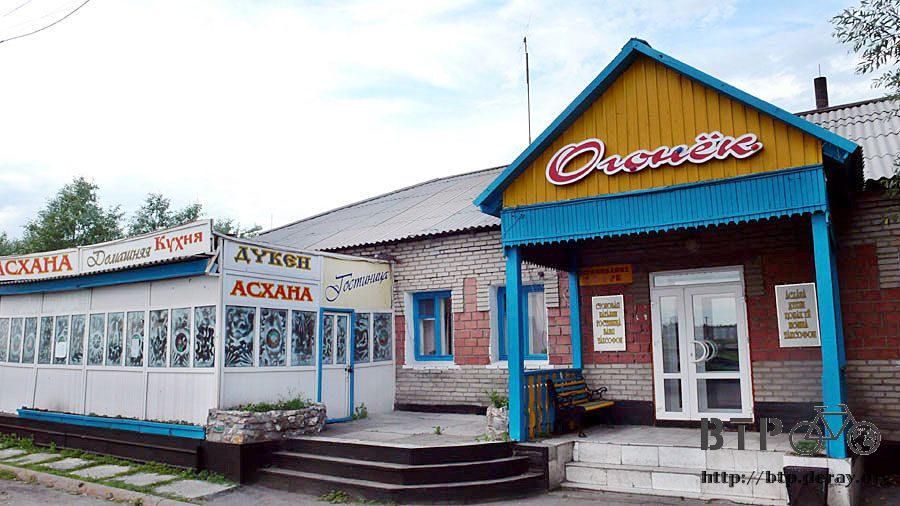
住宿之前拿出護照給老闆娘登記，結果之後就忘了拿回來，還好我有想起這件事情，不算太健忘。
跟老闆娘要回護照的時候，她表示說護照是我住在這裡的時候要押在旅館手上，離開時才會還給我。
真是很奇怪，之前住宿都不需要押護照，現在住便宜的旅館居然這麼麻煩。
這本護照還有很多簽證等著我去通關，萬一弄丟了不是一句『麻煩大了』就能形容。
我拿出台胞證，說用這一本抵押行嗎？一本換一本，護照還給我，老闆娘翻一翻台胞證，一臉訝異我居然有兩本護照。
反正台胞證弄丟了也不要緊，護照順利拿回來才讓人晚上睡得著覺。
六百元的房間該怎麼形容呢，裡面有很多的床，總計五張，這麼多張床就我一個人睡還真有點寂寞。
『將自行車牽到房間裡面一起睡』的這個選項，在哈薩克的旅館預設值都是否定的，必須向老闆爭取才能將車子牽進來放。
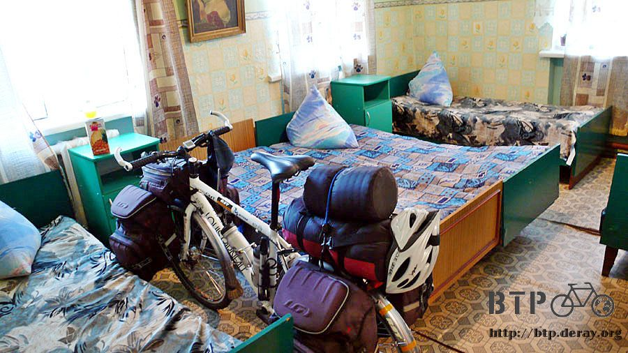
能夠找到便宜的旅館好開心，晚餐吃得飽飽的，有小瓦壺燉著馬鈴薯、蘑菇和牛肉，以及一碗麵片灑上蔥花和很多的洋蔥絲，裡頭還有大塊的牛肉。
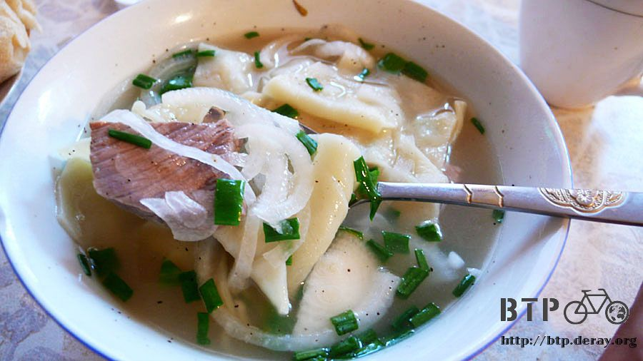
吃飯的時候也不會被奇怪的客人騷擾，光顧的都是友善的人，有人問說要不要搭他的便車直接載我去國境，當然是好意心領。
吃這頓飯的錢本來有其他桌的客人要幫我付，我趕緊先自己把錢給付掉，不要欠太多人情。
其它客人要走的時候還買了巧克力棒送給我，祝我旅途順利。
這裡真是一間溫馨的旅館兼餐廳，明天可以在這裡徹底的休息一整天，在哈薩克旅行以來首次可以一整天不用騎車，難得的悠閒時光。
繼續閱讀：7.18 繪畫天份
哈薩克-堅戈－ 1：0.26 台幣
7.17 |
總計：3295元 |
商店洗衣粉、大瓶柳橙汁、葡萄乾麵包、冰淇淋、巧克力餅乾715元、維修小多更換鋼絲20元、網路兩小時800元、商店氣泡礦泉水、蘋果汁、洋芋片、口香糖、蛋糕580元、旅館600元、晚餐牛肉洋蔥麵、馬鈴薯燉肉、麵包、奶茶400元、鳳梨汁180元 |
|